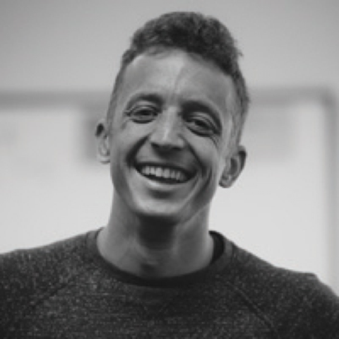

About Me
I was born in the Silicon Valley in the late 80s, and have lived all over the bay area. I was a nerdy kid in high school who built PCs for fun, and that led me to an interest in computer engineering. I went to study the subject at the University of California, Santa Cruz, and found a love of surfing, rock climbing, and triathlon training while there.
By training I am a hardware engineer, and it's been serving me well for the past 7 years. Sometimes, I sit down to write firmware in C, a low level langauge tuned more for using hardware devices. I've come to find that my software experience is a bit lacking, and in addition my career has taken me to working at Cloud Scale. The marriage of these wants led me to get involved with the UC Berkeley Coding Bootcamp, and then that led to creation of this portfolio page (which I've always wanted to have one!). Now I can track some of my personal projects!
I've lived in a bunch of different Bay Area locations and I'm proud to call it home. Growing up in the South Bay, working on the Peninsula for a while, living in San Francisco previously and currently living in Oakland now. Recently in life I've acquired a taste for getting out of the Bay Area. I left my job in 2015 to go travel for 6 months and visited Myanmar, Thailand, Malaysia, Indonesia, Singapore, Cambodia, Vietnam, and Fiji in that order! That was the longest period of time I've spent outside of the USA, and I'm eager to do more. Since that round of travel I've gone to Iceland as well as Nicaragua, and I'm currently planning a trip to see the Netherlands, Austria, and Hungary!